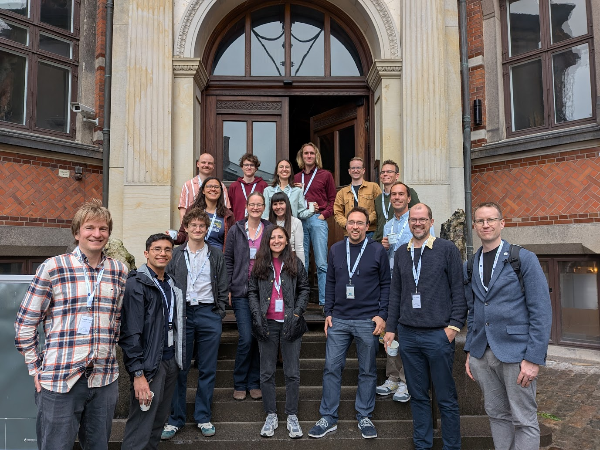
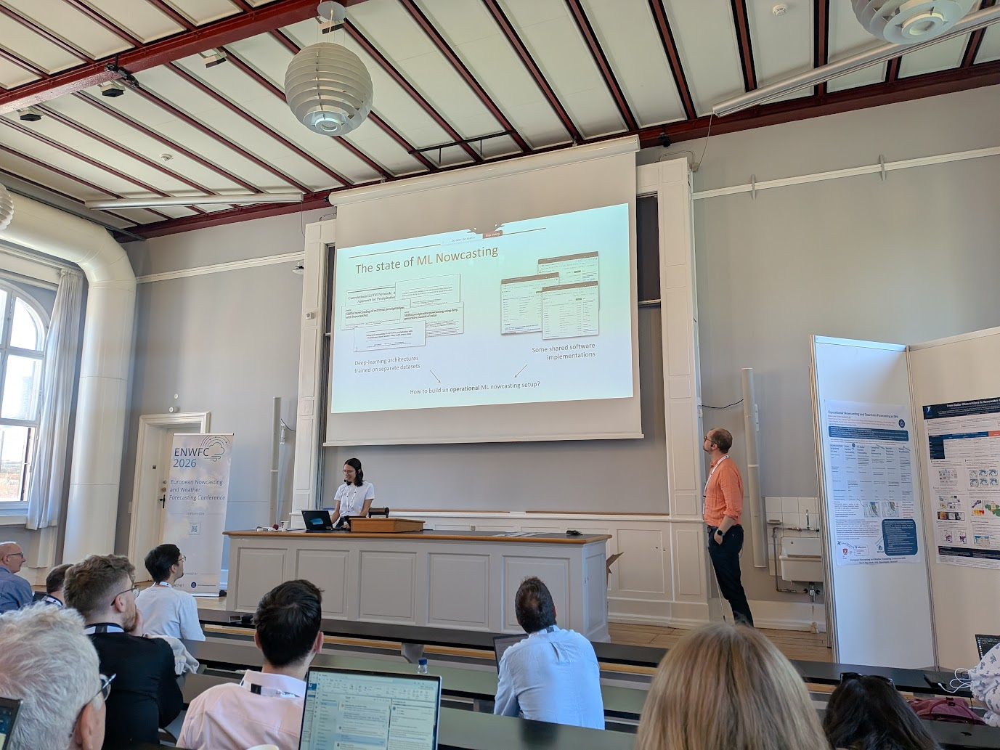

Who We Are
An open network of people who care about reproducible nowcasting, shared data, and useful forecasting infrastructure.

Building open weather nowcasting together.
MLCast is a community of researchers, meteorologists, software engineers, students, and public-data stewards working on practical machine-learning tools for short-term precipitation forecasting.
An open network of people who care about reproducible nowcasting, shared data, and useful forecasting infrastructure.

We build datasets, validators, model code, documentation, and examples that help teams compare and improve precipitation forecasts.

Better open tools can make severe-weather research easier to verify, easier to reuse, and more useful for the people who need lead time.
Gabriele Franch
The community gives us a common language for turning local radar archives into reusable training data.
Leif Denby
I bring experience in operational meteorology and a practical perspective on what forecasters actually need from machine-learning tools.

Irene Livia Kruse
Working at the intersection of data engineering and atmospheric science, I help turn raw radar data into clean, well-documented datasets.